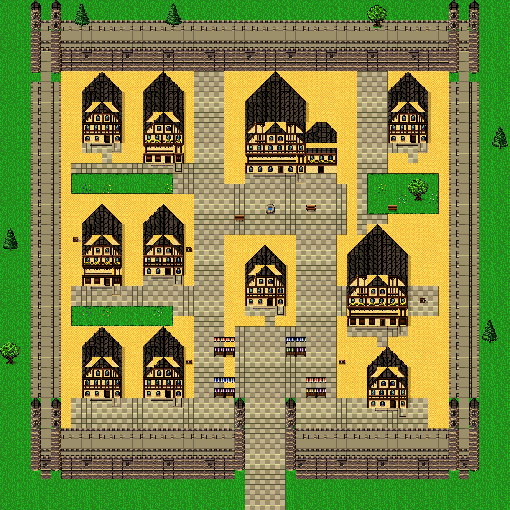
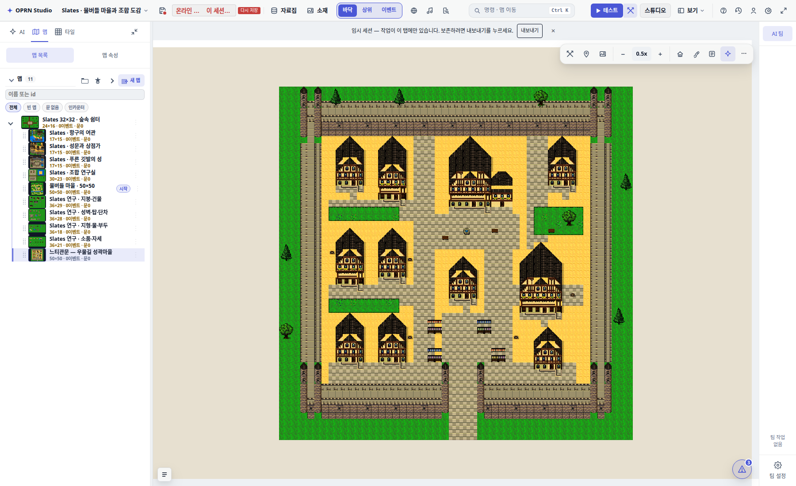

SLATES · DOCUMENT-ONLY AUTHORING EXPERIMENT문서로만 만든 50×50 성곽 마을
느티관문
GPT 6 Astra · medium 서브에이전트에게 이전 대화를 전달하지 않고 학습 문서와 원본 칩셋을 제공했습니다. 아래 배치는 에이전트가 직접 작성·교정한 결과입니다. 감독자는 배치를 수정하지 않고 에디터 검증과 저장을 맡았습니다.
50×5032px 타일
12개건물·별동
20 / 20접근 목표 연결
33개실제 읽은 입력 파일

실제 에디터 내보내기 · 3200×3200 PNG · 이미지를 누르면 원본 크기
무엇을 전달했나
구조 학습, 표본 40개, 전체 46구역 도감, 저작 규칙을 Markdown·PNG·JSON으로 저장했습니다. 원본 타일을 포함한 허용 입력 144개를 해시 목록으로 고정했고, 에이전트는 과제 지침을 포함해 필요한 33개 입력을 읽었다고 기록했습니다. 기존 완성 맵과 생성기는 입력에서 제외했습니다.
시작 문서는 저장소 AGENTS.md, openwiki/PROJECT_WIKI.md, openwiki/quickstart.md에서 찾을 수 있습니다. ZIP에는 같은 경로 구조로 147개 파일을 묶었습니다.
판정: 전달은 가능, 미술 완성도는 부분 달성
성곽 외곽과 열린 쌍탑문, 구역과 동선, 전용 칩셋과 출처 기록은 문서만으로 저작했습니다. 실제 엔진에서 1,380칸과 20개 접근 목표가 연결되며, 남문을 가상으로 막으면 외부에서 내부 광장으로 들어갈 수 없습니다.
참고 이미지 수준의 복잡한 건축과 밀도에는 아직 미치지 못합니다. 건물의 반복감, 넓은 지붕 접합부, 단순한 측면 성벽이 남았습니다. 16/8px 부품 조립을 쓰지 않고 32px 전체 조각으로 구성한 결과입니다. NPC·실내·문 개폐 기능은 없습니다.
Astra의 직접 작성 보고서 · 모델·프롬프트·대화 미전달 기록 · 타일 합성 출처
실제 편집기

기존 10개 맵과 시작 위치를 보존하고 새 맵으로 추가했습니다.Supabase 프로젝트 rpg-zzu-slates32-38e6, 맵 slates_astra_walled_50. 원격 저장 후 프로젝트·맵·칩셋 재로드 일치를 확인했습니다. 저장 근거